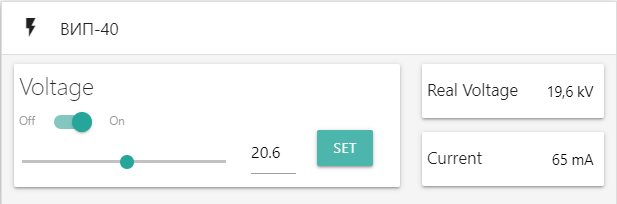

Для того чтобы устройство могло быть опознано, на ПК необходима установка драйвера для CH340G.
Но если по какой-то причине на ПК нет драйвера, его можно установить, нажав на "УСТАНОВИТЬ ДРАЙВЕР" ниже
Если драйвера нет, то в пункте "Другие устройства(Other devices)" будет отображаться "USB2.0-Serial"
Если драйвер установлен, то в пункте "Порты (COM &LPT)" будет отображаться "USB-SERIAL CH340"
Для начала обмена пакетами данным с ГИ и ВИП-40 необходимо нажать на кнопку "ПОДКЛЮЧИТЬ", которая находится в статус-баре
По умолчанию:
- Напряжения ВИП-40: 0 В
- Состояние ВИП-40: ВЫКЛ
- Частота ГИ: 1 Гц
- Состояние ГИ: ВЫКЛ
В карточке «ВИП-40» устанавливается значение напряжения источника, переключатель «Off-On» позволяет изменять состояние между выключен/включен. В ячейках «Real Voltage» и «Current» отображаются значения, присылаемые с МК_1. По умолчанию источник выключен, установленное напряжение: 0 В.

| № байта | Назначение | Величина |
|---|---|---|
| 0 | Адрес МК | 100 |
| 1 | ВКЛ/ВЫКЛ | 1/0 |
| 2 | Разделитель | ',' |
| 3, 4, 5 | Частота | 0..200 |
| 6 | Разделитель | ',' |
| 7, 8, 9 | Контрольная сумма | 0..201 |
| № байта | Назначение | Величина |
|---|---|---|
| 0 | Адрес МК | 100 |
| 1, 2, 3 | Вакууметр | 0..999 |
| 4 | Разделитель | ',' |
| 5, 6, 7 | Контрольная сумма | 0..201 |
| № байта | Назначение | Величина |
|---|---|---|
| 0 | Адрес МК | 100 |
| 1 | № устройства | 1/0 |
| 2 | Разделитель | ',' |
| 3 | ВКЛ/ВЫКЛ | 0/1 |
| 4 | Разделитель | ',' |
| 5, 6, 7 | Напряжение | 0..400 |
| 8 | Разделитель | ',' |
| 9, 10, 11 | Контрольная сумма | 0..402 |
| № байта | Назначение | Величина |
|---|---|---|
| 0 | Адрес МК | 100 |
| 1 | № устройства | 1 |
| 2 | Разделитель | ',' |
| 3 | ВКЛ/ВЫКЛ | 0/1 |
| 4 | Разделитель | ',' |
| 5, 6, 7 | Напряжение | 0..400 |
| 8 | Разделитель | ',' |
| 9, 10, 11 | Ток | 0..125 |
| 12 | Разделитель | ',' |
| 13 | Состояние | 0..5 |
| 14 | Разделитель | ',' |
| 15, 16, 17 | Контрольная сумма | ',' |